Dunkleosteus
Cá bọc thép khổng lồ kỷ Devon
Tổng quan
Kỷ
Devon
Họ
Dunkleosteidae
Chi
Dunkleosteus
Dài
6 m
Nặng
1.5 tấn
Thức ăn


Dunkleosteus là một chi cá da phiến tuyệt chủng, từng tồn tại vào cuối kỷ Devon, khoảng 380-360 triệu năm trước. Vài loài, ví dụ như D. terrelli, D. marsaisi, và D. magnificus, nằm trong số những loài cá da phiến lớn nhất từng sinh tồn.
Nguồn: wikipedia.org
Phân bố
Khu vực Bắc Mỹ, Châu Âu và Châu Phi
Thông tin thêm về Dunkleosteus
Kỷ nguyên
Dunkleosteus từng sống và phát triển trong môi trường biển cổ đại vào cuối kỷ Devon. Chúng được cho là sống gần đáy đại dương. Tuy nhiên, có suy đoán rằng các thành viên của chi này có xu hướng thay đổi môi trường sống theo tuổi tác. Dunkleosteus trẻ hơn có lẽ sống ở vùng nước nông trong khi những con trưởng thành mạo hiểm vào sâu trong đại dương.
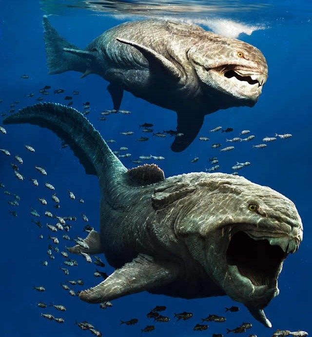Hầu hết các mẫu hóa thạch của cá Dunkleosteus được tìm thấy ở Hoa Kỳ, Bắc Mỹ và cả ở Châu Âu, trong các đơn vị đá Devon muộn có tuổi Frasnian và Famennian khoảng 380-360 triệu năm trước, đây được xem là thời đại hoàng kim và thời kỳ phát triển thịnh vượng của các loài cá ăn thịt cỡ lớn.
Tên khoa học
Phát âm: "Dunkle-os-tee-us". Tên này có nghĩa là "Xương của Dunkle" - Được đặt tên bởi nhà cổ sinh vật học Jean Pierre Lehman năm 1956, dựa theo tên của nhà cổ sinh vật học David Dunkle, người đã mô tả các hóa thạch đầu tiên. Osteus trong tiếng Hy Lạp có nghĩa là xương, đề cập đến những tấm xương khổng lồ tạo nên đầu và hàm.
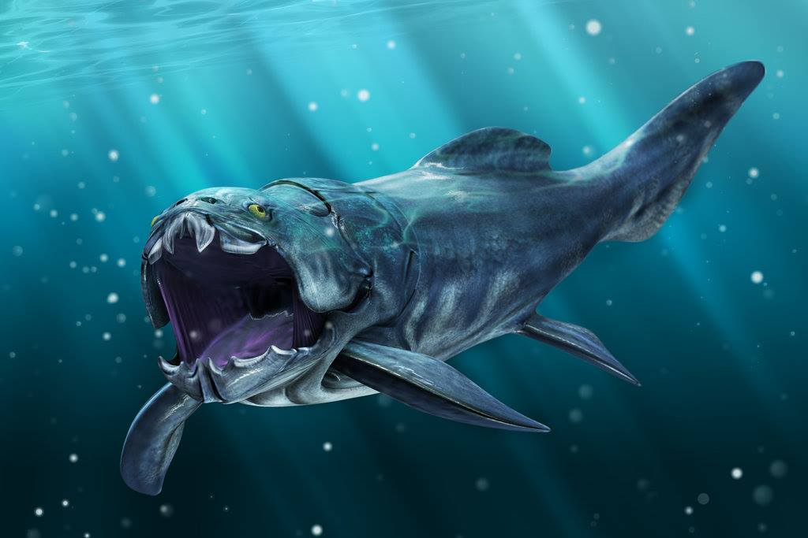Kích thước
Dunkleosteus là một loài cá có kích thước lớn và rất có thể là loài cá lớn nhất trong kỷ Devon. Trước đây có rất nhiều tranh cãi về kích thước thật của loài cá này, bởi vậy rất nhiều người cho rằng loài cá này có chiều dài cơ thể lên tới hơn 10 mét, nhưng trên thực tế, qua phân tích và mô phỏng lại thân hình của loài cá này từ các mẫu hóa thạch tìm kiếm được, chúng ta biết được rằng chiều dài tối đa của loài Dunkleosteus là 6 mét và nặng tới gần 1,5 tấn.
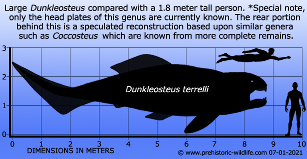Ngoại hình
Dunkleosteus là những con "cá bọc thép". Đầu và cổ của chúng được bao bọc bằng một lớp áo giáp xương khá dày. Theo hình dạng của hóa thạch cổ và hộp sọ thì loài cá này có phần lưng cao hơn, và cơ thể của chúng phải rất mập mạp, với một cái đuôi lớn, mạnh mẽ ở phía sau.
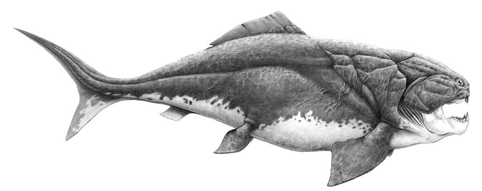Bao phủ bên ngoài lớp giáp đó là một bộ da rất bóng, đi theo đó là một đôi mắt mọc ở hai bên đầu với những chiếc răng sắc nhọn khổng lồ có thể nhìn thấy ngay từ bên ngoài. Cơ thể rắn chắc, cái miệng sở hữu lực cắn kinh hoàng và bộ giáp cứng cáp khiến cho Dunkleosteus trở thành một chiếc xe bọc thép đúng nghĩa ở trong lòng đại dương.
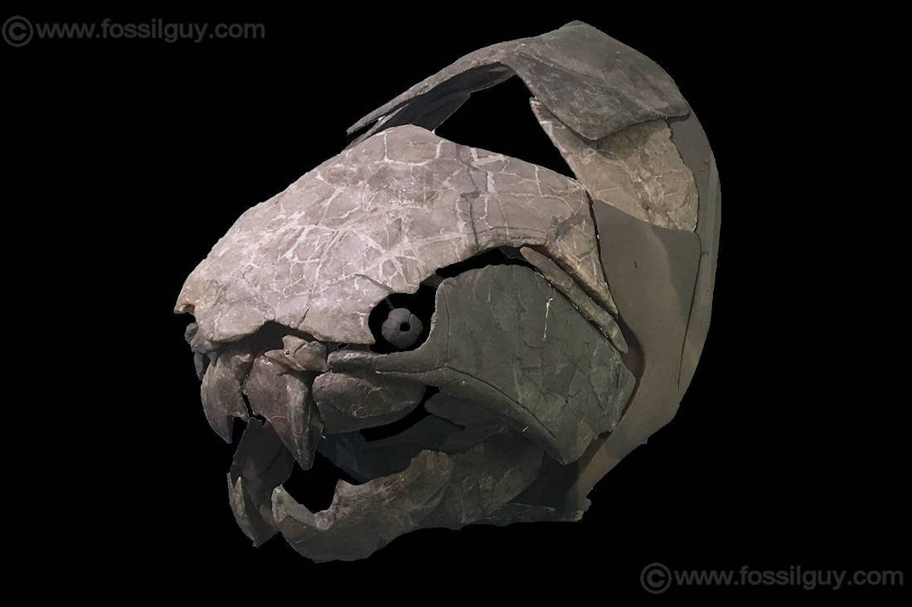Sự thật thú vị
Mặc dù có thể nhìn thấy ngay từ bên ngoài, nhưng trên thực tế loài cá này không hề có răng, thứ mà chúng ta nhìn thấy và coi là răng về bản chất đó chính là một phần của lớp áo giáp xương của chúng. Tuy nhiên, các tấm hàm bọc thép của nó đã tạo thành những lưỡi dao tự mài sắc khổng lồ!
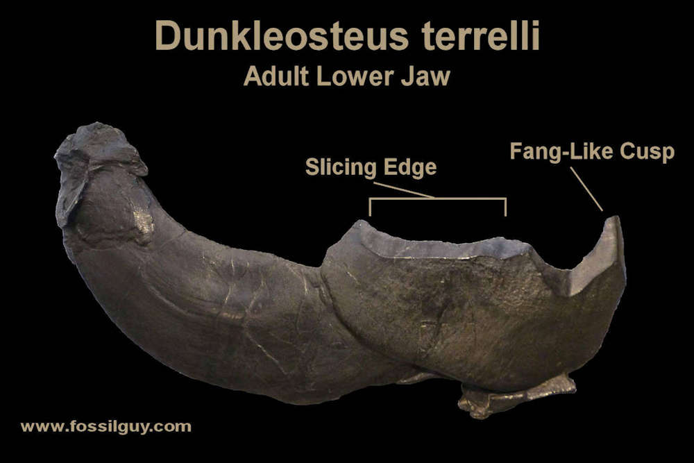Với trọng lượng 1.000 pound (21.000 pound trên mỗi inch vuông), Dunkleosteus có thể nhai xuyên qua xương. Lực lượng này ngang ngửa với Cá sấu khổng lồ!
Chế độ ăn và săn mồi
Dunkleosteus là động vật ăn thịt và được xem là sinh vật đứng đầu chuỗi thức ăn dưới đại dương thời kỳ bấy giờ. Dunkleosteus cũng được coi là một tay sát thủ hạng nặng của Trái Đất kể từ khi bắt đầu sự hình thành của những sinh vật có xương sống. Với cấu tạo vô cùng đặc biệt, đầu và ngực được bao phủ bởi các tấm xương như bọc thép, Dunkleosteus là nỗi khiếp đảm của cá mập cùng nhiều loài sinh vật biển khác thời tiền sử, chúng có thể ăn gần như bất kỳ loài động vật nào có chung hệ sinh thái.
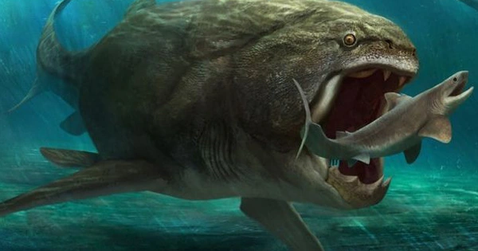Kích thước không phải là điểm mạnh duy nhất của loài cá khổng lồ này. Dunkleosteus có một hệ thống liên kết độc đáo kết nối hộp sọ và cơ hàm theo cách giúp nó có thể mở và đóng hàm một cách nhanh chóng. Bằng cách này, hàm tạo ra một lực cắn lớn đủ để xé toạc con mồi. Lực cắn được ước tính lần lượt là khoảng 6.000 newton và 7.400 newton ở đầu và cạnh lưỡi kiếm. Đây là áp lực đủ để cắt xuyên qua và làm thủng lớp giáp da hoặc lớp biểu bì của động vật có vỏ, điều này cho thấy rằng chúng săn những con mồi có giáp bơi tự do, như ammonite và các loài cá da phiến khác.
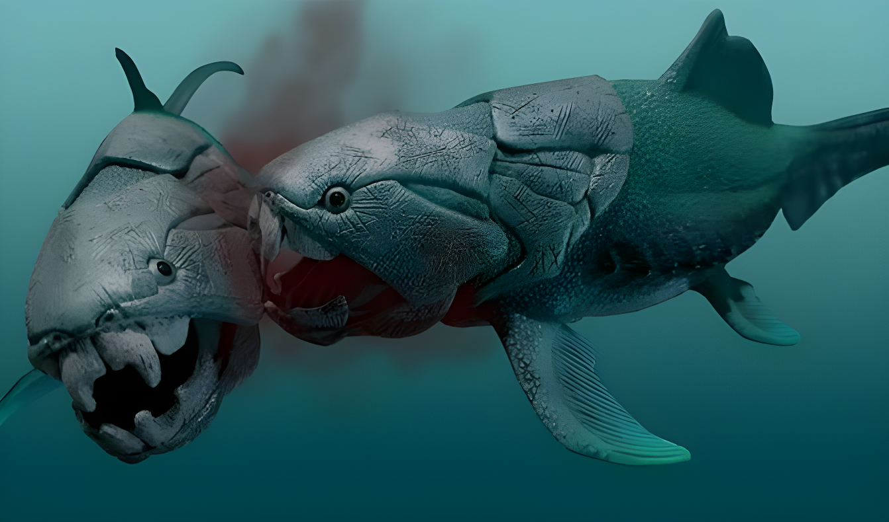Khám phá
Hóa thạch của Dunkleosteus đã được tìm thấy gần như trên toàn cầu trong các đơn vị đá cuối kỷ Devon. Tuy nhiên, những mẫu vật nổi tiếng nhất trên thế giới là từ Cleveland Shale ở phía bắc Ohio.
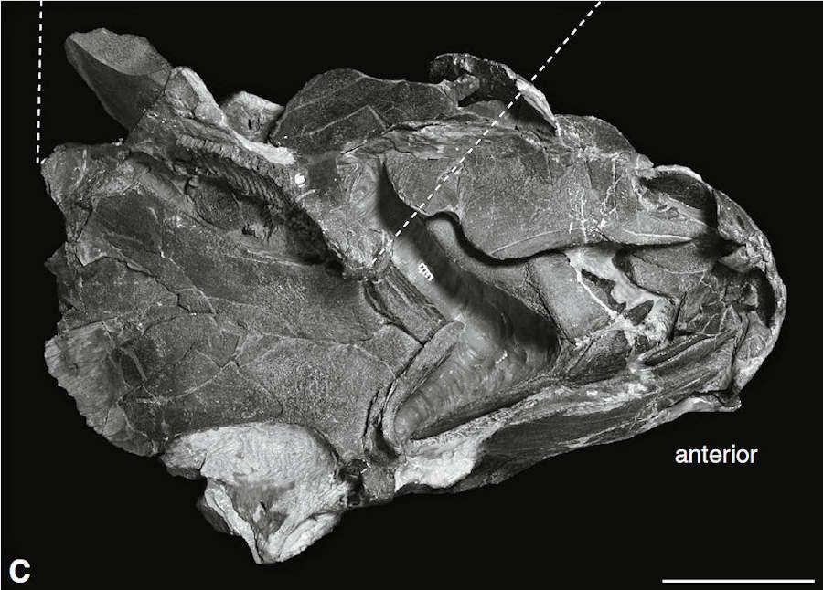Phần còn lại của những con vật này được phát hiện lần đầu tiên vào năm 1867 bởi nhà cổ sinh vật học nghiệp dư Jay Terrell và con trai ông tại thị trấn Sheffield Lake dọc theo vách đá Hồ Erie. Ông gọi con vật là “Con cá khủng khiếp”. Sau đó, nó được tái phát hiện nhiều năm sau đó bởi nhà cổ sinh vật học David Dunkle. Loài điển hình của loài động vật này (cũng là loài lớn nhất) cuối cùng được gọi là Dunkleosteus terrelli để vinh danh hai người đầu tiên phát hiện ra nó.
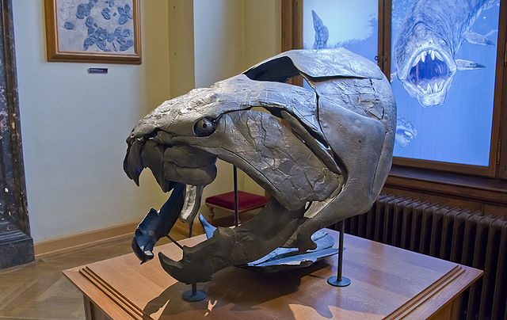Sự tuyệt chủng
Một loạt các sự kiện tuyệt chủng hàng loạt vào cuối kỷ Devon đã quét sạch hầu hết các loài động vật tồn tại vào thời điểm đó, bao gồm cả Dunkleosteus và các loài cá da phiến khác. Mặc dù chúng nhanh chóng đa dạng hóa thành nhiều loài sau khi xuất hiện lần đầu tiên vào Kỷ Devon, nhưng sự tồn tại của chúng chỉ tồn tại trong một thời gian ngắn.
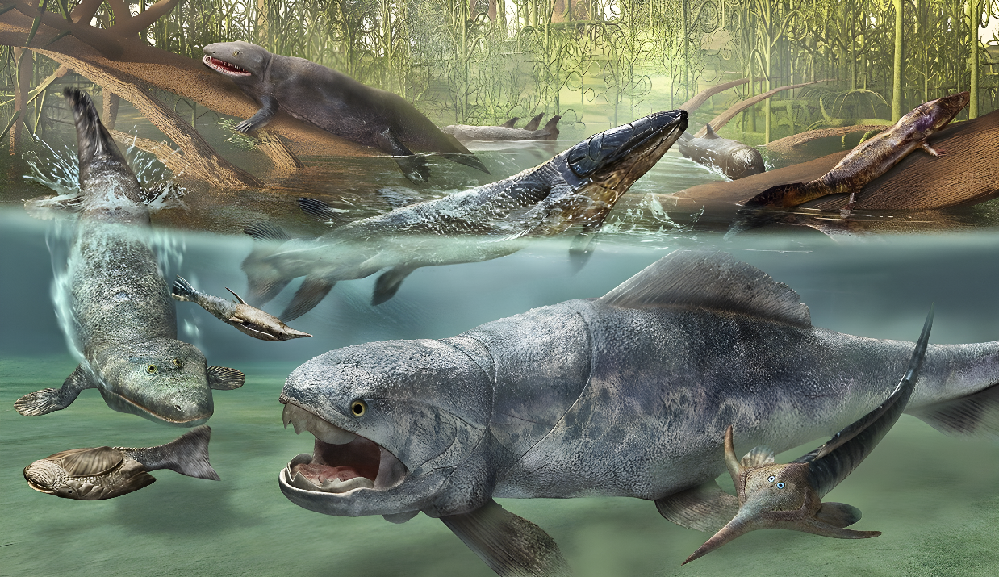Đến cuối kỷ Devon, vào khoảng 370 triệu năm trước, một cặp sự kiện có tên Kellwasser và Hangenberg đã tạo ra một thảm hoạ kép, làm mất mát rất nhiều loài và tổn thất đến đa dạng sinh học của Trái Đất lúc bấy giờ. Khoảng thời gian diễn ra của sự kiện này ước chừng dao động vào khoảng 500 ngàn đến 25 triệu năm trước và người ta cũng không thể chỉ ra được nguyên nhân đơn lẻ cụ thể gây ra sự tuyệt chủng là do cái gì. Nhiều người cho rằng nhiều loài đã tiến hoá và bắt đầu di chuyển lên mặt đất để sống, làm cho những loài cũ dần biến mất. Song, nhiều nghiên cứu cũng chỉ ra rằng môi trường sống Trái Đất biến đổi mạnh mẽ đã làm cho sự sống trở nên khó khăn hơn.
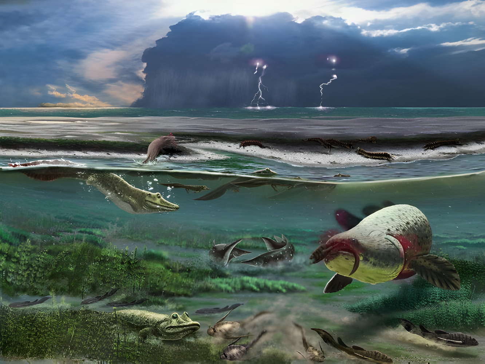